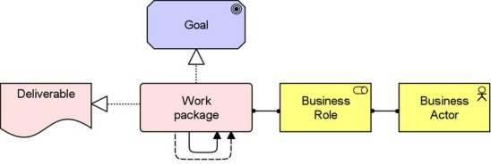

The Project viewpoint is primarily used to model the management of architecture change. The architecture of the migration process from an old situation (current state enterprise architecture) to a new desired situation (target state enterprise architecture).
| Stakeholders | (Operational) managers, enterprise and ICT architects, employees, shareholders |
| Concerns | Architecture vision and policies, motivation |
| Purpose | Deciding, informing |
| Abstraction Level | Overview |
| Layer | Implementation and Migration extension |
| Aspects | Passive Structure, Behaviour, Active Structure |
Concepts and Relations
